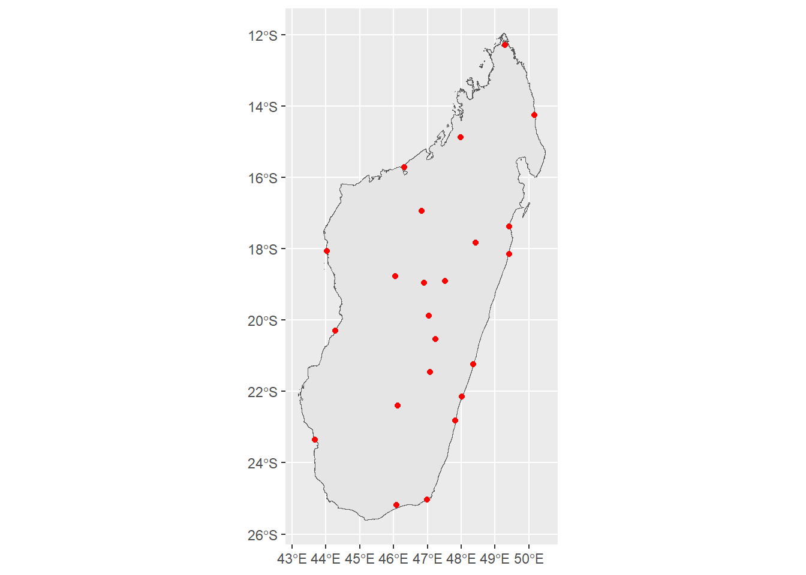

#run this line first if you have never used these packages before
#install.packages(c("tidyverse", "sf", "tmap", "readr", "here"))
library(tidyverse) #install the core tidyverse packages including ggplot2
library(sf) #provides tools to work with vector data
library(tmap) #for visualizing spatial data
library(readr) #functions for reading external datasets
library(here) #to better locate files not in working directoryHow to make a map
1 Introduction
Similar to QGIS, R provides an open-source interface to make maps. The most commonly used packages to handle spatial data are sf for vectors, terra for vectors and rasters, and raster for rasters.
The most commonly used packages for visualizing spatial data are ggplot2 - R’s most famous visualization package - and tmap which is designed specifically for visualizing spatial data. This demonstration will provide code for both packages, but I’m only going to talk through the tmap version using the same data that we used for the QGIS portion.
To get started, we need to load our packages.
2 Read in the data
For this exercise, the data is already saved in my directory so I’ll read in the csv file with city names and locations, and then I’ll read in the administrative boundaries.
#It is a csv file so I use the read_csv function and provide the file path
cities <- read_csv(here::here("./Map demo/data/Madagascar_Cities.csv")
, show_col_types = FALSE)
#Observe the first few rows of data
DT::datatable(head(cities))Now, for the administrative boundaries. Each of these are being read in using st_read() from the sf package. These are by default, spatial (sf) objects already.
#This is only the country boundary
mdg <- st_read(here::here("./Map demo/data/shapefiles/mdg_admbnda_adm0_BNGRC_OCHA_20181031.shp"))Reading layer `mdg_admbnda_adm0_BNGRC_OCHA_20181031' from data source
`C:\Users\brian.calhoon\Documents\Github repos\methods-corner\Map demo\data\shapefiles\mdg_admbnda_adm0_BNGRC_OCHA_20181031.shp'
using driver `ESRI Shapefile'
Simple feature collection with 1 feature and 3 fields
Geometry type: MULTIPOLYGON
Dimension: XY
Bounding box: xmin: 43.17692 ymin: -25.60575 xmax: 50.48485 ymax: -11.95139
Geodetic CRS: WGS 84#This is the administrative level below the whole country
mdg1 <- st_read(here::here("./Map demo/data/shapefiles/mdg_admbnda_adm1_BNGRC_OCHA_20181031.shp"))Reading layer `mdg_admbnda_adm1_BNGRC_OCHA_20181031' from data source
`C:\Users\brian.calhoon\Documents\Github repos\methods-corner\Map demo\data\shapefiles\mdg_admbnda_adm1_BNGRC_OCHA_20181031.shp'
using driver `ESRI Shapefile'
Simple feature collection with 22 features and 9 fields
Geometry type: MULTIPOLYGON
Dimension: XY
Bounding box: xmin: 43.17692 ymin: -25.60575 xmax: 50.48485 ymax: -11.95139
Geodetic CRS: WGS 84#This is the administrative level below the previous one
# maybe these are districts
mdg2 <- st_read(here::here("./Map demo/data/shapefiles/mdg_admbnda_adm2_BNGRC_OCHA_20181031.shp"))Reading layer `mdg_admbnda_adm2_BNGRC_OCHA_20181031' from data source
`C:\Users\brian.calhoon\Documents\Github repos\methods-corner\Map demo\data\shapefiles\mdg_admbnda_adm2_BNGRC_OCHA_20181031.shp'
using driver `ESRI Shapefile'
Simple feature collection with 119 features and 13 fields
Geometry type: MULTIPOLYGON
Dimension: XY
Bounding box: xmin: 43.17692 ymin: -25.60575 xmax: 50.48485 ymax: -11.95139
Geodetic CRS: WGS 843 Convert the cities to an sf object
Remember that the cities object is a standard .csv with longitude and latitude columns, but it is not yet recognized as an sf object. Here is how to convert it to an sf object with a single geometry column and a crs.
cities_sf <- cities |>
st_as_sf(coords = c("Longitude", "Latitude")
, crs = 4326)
#observe the first few rows of data
DT::datatable(head(cities_sf))4 Make the map
tmap_mode("plot") +
tm_shape(mdg) +
tm_polygons() +
tm_shape(cities_sf) +
tm_dots(col = "red")
ggplot2::ggplot(mdg) +
geom_sf() +
geom_sf(data = cities_sf, color = "red")
5 Make the map better
#the city names are long so we have to
# make a bigger window to fit them. This isn't part of the normal process
#make an object with the current bounding box
bbox_new <- st_bbox(mdg)
#calculate the x and y ranges of the bbox
xrange <- bbox_new$xmax - bbox_new$xmin # range of x values
yrange <- bbox_new$ymax - bbox_new$ymin # range of y values
#provide the new values for the 4 corners of the bbox
bbox_new[1] <- bbox_new[1] - (0.7 * xrange) # xmin - left
bbox_new[3] <- bbox_new[3] + (0.75 * xrange) # xmax - right
bbox_new[2] <- bbox_new[2] - (0.1 * yrange) # ymin - bottom
bbox_new[4] <- bbox_new[4] + (0.1 * yrange) # ymax - top
#convert the bbox to a sf collection (sfc)
bbox_new <- bbox_new |> # take the bounding box ...
st_as_sfc() # ... and make it a sf polygon
#now plot the map
tmap_mode("plot") +
tm_shape(mdg, bbox = bbox_new) +
tm_polygons() +
tm_shape(cities_sf) +
tm_dots(size = .25, col = "red") +
tm_text(text = "Name", auto.placement = T) +
#tm_scale_bar(position = c("left", "bottom"), width = 0.15) +
#tm_compass(position = c("right", "bottom"), size = 2) +
tm_layout(title = "Main Cities of\nMadagascar")
#the city names are long so we have to
# make a bigger window to fit them. This isn't part of the normal process
#make an object with the current bounding box
bbox_new <- st_bbox(mdg)
#calculate the x and y ranges of the bbox
xrange <- bbox_new$xmax - bbox_new$xmin # range of x values
yrange <- bbox_new$ymax - bbox_new$ymin # range of y values
#provide the new values for the 4 corners of the bbox
bbox_new[1] <- bbox_new[1] - (0.5 * xrange) # xmin - left
bbox_new[3] <- bbox_new[3] + (0.5 * xrange) # xmax - right
bbox_new[2] <- bbox_new[2] - (0.1 * yrange) # ymin - bottom
bbox_new[4] <- bbox_new[4] + (0.1 * yrange) # ymax - top
#convert the bbox to a sf collection (sfc)
bbox_new <- bbox_new |> # take the bounding box
st_as_sfc() # ... and make it a sf polygon
ggplot2::ggplot() +
geom_sf(data = mdg) +
geom_sf(data = cities_sf, color = "red") +
ggrepel::geom_text_repel(data = cities_sf
, aes(label = Name
, geometry = geometry)
, stat = "sf_coordinates"
, min.segment.length = 0) +
coord_sf(xlim = st_coordinates(bbox_new)[c(1,2),1], # min & max of x values
ylim = st_coordinates(bbox_new)[c(2,3),2]) + # min & max of y values +
labs(title = "Main Cities of\nMadagascar") +
theme_void()